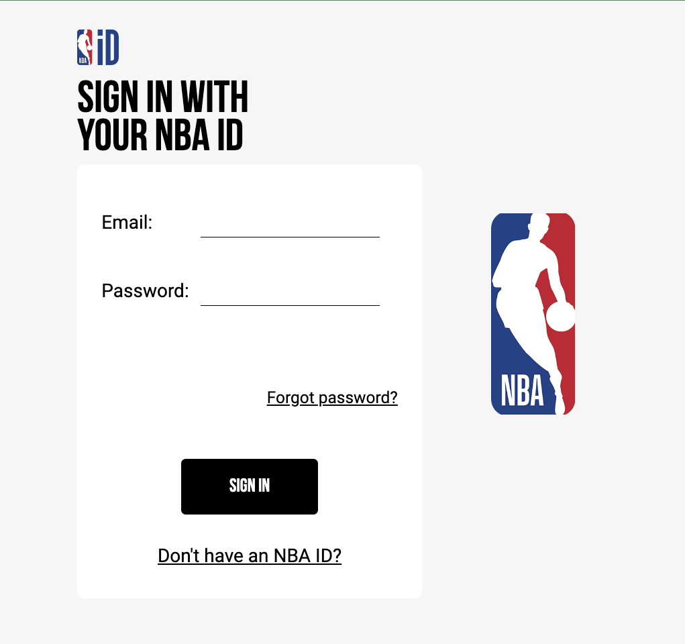

The Overview
For my IDM 241 course, I had to recreate and implement micro-interactions into an existing website using HTML, CSS, and Javascript. I had to think creatively to come up with useful solutions and improvements to current programs, and had to produce a fully-functional micro-interaction at the end of the course. Through 11 weeks, I researched, conceptualized, tested, and built a micro-interaction that expands upon NBA.coms sign-in model with GIF and signifiers.
Context and Challenge
In this course, IDM 241, we focused on micro-interactions and how to build them using scripting techniques. The main problem that I needed to solve was giving a component of a site that had few/no micro-interactions unique micro-interactions. This project exists to help its participants understand the concepts behind micro-interactions, and how they can be applied in code. It also shows what it takes to actually plan ideas out and construct them based on trial and error. I had the full quarter (about 11 weeks not including breaks) to build my project.
The final goal of this project was to implement multiple unique micro-interactions to an existing component of a website. This was a solo project, and In order to complete this final goal, I had to figure out a series of smaller problems. First, I had to recreate a micro-interaction on a certain component of a website. Then, I had to figure out how I could add multiple, unique micro-interactions to this component and be able to define its triggers, rules, feedback, loops, and modes. I really had to think about what micro-interactions I could implement to the program I chose, and how they could improve the program and still seamlessly integrate with the themes of the site itself.
Process and Insight
I started off by trying to select a website to build my project upon, and building my initial micro-interaction. Since it was football, I thought about doing the ESPN Fantasy app. I have been playing fantasy football for a few years now, and I thought that it would be a cool idea to create a micro-interaction that displayed a green “touchdown” overlay pop-up when a player on your team scored a touchdown. I ran into several problems when trying to create this concept for my initial micro-interaction. Firstly, there were issues with the site itself. You can only see this micro-interaction happen if you have an ESPN fantasy account, have a team, are part of a league, and are actively playing in a game that only happens a few times per week. Thats a lot of hurdles to go through just to access the micro-interaction. Secondly, you would only be able to see this micro-interaction if you were on the scorers table screen for a long period of time. The scorers table screen is where you see your fantasy players and their points they actively learn from you during a game. Since a player is not on the field at all times, it can take minutes for them to show back up and score points. Not many people are sitting around waiting for a player to score. Finally, this micro-interaction already exists! As I was researching the ESPN fantasy app, I asked my friends that I am in the same fantasy league with if they ever noticed any micro-interactions that occur during touchdowns. Apparently, they do! A players name and picture icon will light up green to signify when they score a touchdown, similar to what I had planned. Before I could realize this, I was misunderstanding our assignment. In the beginning stages, we were actually meant to replicate an existing micro-interaction of a program, not to create a brand new micro-interaction just yet. By the time I figured this out, I had already decided to switch topics. Overall, I think it was for the best. The idea I already had was way too complicated, and I had no idea how I could expand upon that further.
The NBA.com sign in page, however, did seem like something more feesbile. The NBA season was starting up, and one day I logged into NBA.com to get up to date and read some articles. I noticed that the sign-in page was boring. I felt as if I could replicate the basic micro-interactions, such as hovering on and off the sign-in button, but there was a lot of potential to implement micro-interactions unique to the identity of the NBA that would improve the sign-in model.
I started off by replicating the NBA.com sign-in interface as best I could. I matched the model design wise, excluding the input boxes. I also replicated the hover-on and hover-off button, but I took an unnecessary step in creating a loading pop-up after the button was clicked. In later iterations, I discarded this. I wanted to focus more on the sign-in module itself rather than outside factors.
After this, I came up with a great idea for improvement. I shrunk the sign-in module, and added an empty div to the side of the module. When the sign-in button got clicked, the empty div to the left displayed a looping GIF of a basketball being scored and said “SUCCESS!”. I think this was a useful micro-interaction to add because it added a good visual signifier to being signed in successfully, and added fun to the standard sign in process.
For the rest of my project, I decided to expand upon this concept. I created input boxes so users could actually input information to the sign-in. Then, using Javascript, I coded a series of if statements that would determine reactions to sign-in information. These reactions would then influence the final build and trigger certain micro-interactions based on the sign-in status.
The Solution
For this project, I re-created the NBA.com sign in model. However, I added key microinteractions to the sign-in process.
If the input boxes of the sign-in were blank, then a GIF of a ref would appear at the top right of the sign-in box, calling a timeout. The input text would also turn red, and this now signified that the input boxes were left empty.
If the input boxes were filled and the sign-in button got pressed, then the incorrect GIF disappeared. However, if the information was incorrect, then a GIF of a basketball clanking off a rim and text that says “UNSUCCESSFUL… TRY AGAIN” will appear. The input text stays red, and this now signifies that the sign-in was unsuccessful.
Now, if the correct information is input and the sign-in button is clicked, then the input text turns green and the made basket GIF displays with text that says “SIGN IN SUCCESSFUL!”
The Results
I think this project was a success. The hardest part for me was trying to find a program that I could implement micro-interactions into. It felt like so many programs already had so many useful micro-interactions, but this project really challenged me to think creatively and find ways to include and create useful concepts. The project as a whole was really fun, and I learned a lot along the way. I had previously learned about micro-interactions in other courses, but Ive never had the chance to conceptualize, build, and code them. For something so small, it really is time consuming and can require a lot of thought. Overall, I think I executed the idea of the project well, and Im happy with the results. I really think I improved the NBA.com sign in model.